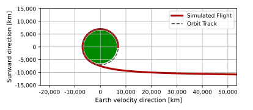
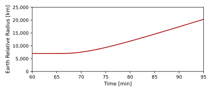
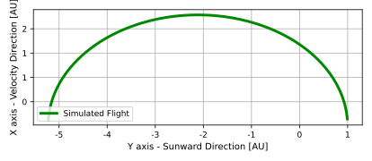
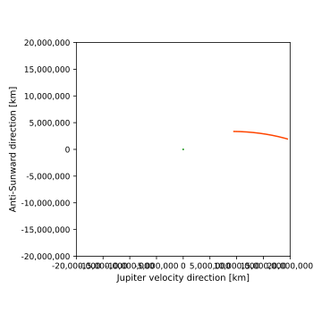
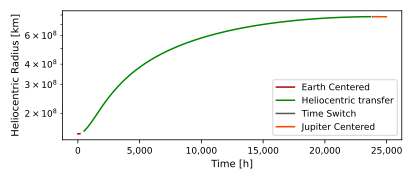

scenarioPatchedConics
Overview
This tutorial considers a patched conics approach to an interplanetary transfer from Earth to Jupiter, by way of a heliocentric Hohmann transfer. The patched conic solution is evaluated making the typical conic trajectory assumptions where an impulsive Dv changes an Earth-centric circular orbit into a hyperbolic departure orbit that escapes the Earth system in the Earth’s heliocentric direction. After an elliptical heliocentric transfer orbit the craft reaches the Jupiter region. The Jupiter relative arrival is a hyperbolic arrival orbit. To simulate this solution, a continuous multi-body gravity integration is performed to illustrate how close the patched conic solution is to reaching a Jupiter fly-by. The simulation is started and stopped to change the integration time steps to appropriate values, and also change relative to what planet the trajectory is logged. However, the simulation state always includes the gravity of Earth, Sun and Jupiter. To keep this tutorial simple, the planets are assumed to be at fixed locations and their ephemeris message is not updated.
The detail of the simulation script is as follows. This script sets up a basic spacecraft which starts in circular Low Earth Orbit, with logging with respect to the Earth. The spacecraft then leaves on a hyperbolic orbit with respect to Earth until it reaches the edge of the Earth’s sphere of influence. The frame of reference is then switched to a Sun centered inertial, and the planetary positions are adjusted accordingly.
The Earth’s velocity is then added to the spacecraft (to account for the heliocentric velocity of the spacecraft) and the simulation is run until the spacecraft approaches Jupiter’s Sphere of Influence (SOI). To allow the simulation to catch up, the time step is reduced just prior to approaching Jupiter’s SOI. Then the logging is set to be relative to Jupiter.
Note that the output position and velocity (when reading message logs) will be relative to the planet that is the central body during that logging period. So to use the last state in each segment, it needed to be adjusted to account for the planet/Sun’s position and velocity.
How to setup a basic spacecraft simulation is shown in the earlier tutorial scenarioBasicOrbit. Simulating a Hohmann transfer is illustrated in scenarioOrbitManeuver. Setting up multiple gravitational bodies is shown in scenarioOrbitMultiBody while providing pseudo-SPICE messages is laid out in scenarioCSS.
This simulation combines all those techniques as well as changing logging relative to multiple bodies for a single simulation.
The script is found in the folder basilisk/examples and executed by using:
python3 scenarioPatchedConics.py
Illustration of Simulation Results
The following images illustrate the expected simulation run returns for a range of script configurations.
show_plots = True
Plots below illustrate the scenario results for the Earth-centered departure, the heliocentric Hohmann transfer, the Jupiter centered fly-by, and a heliocentric log plot of the entire transfer.
    